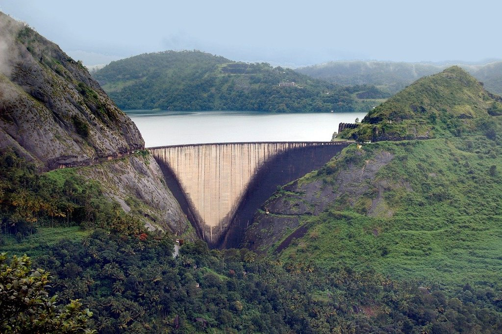
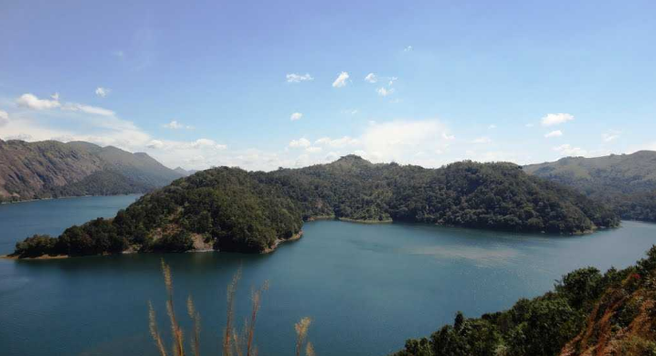

IDUKKI
Idukki is Kerala's second largest district and has been blessed with numerous natural wonders. The high valleys and hill ranges of this landlocked region are fed by three major rivers - Periyar, Thalayar and Thodupuzhayar and their tributaries. Its forest still hosts many tribes and over half of the terrain is still covered with forests. People love going to the gigantic arch dam for getting its mesmerising view. Blessed with a wide range of trekking trail, each of them offers a spectacular view of the valley below and ranges above of Idukki. The place is also renowned for its exotic flora and fauna and one can come across many rare species while visiting Idukki.



IDUKI ARCH DAM
Idukki Arch Dam, an engineering marvel, is located in the South-Indian state of Kerala. It is an arch dam with a double curvature and is built on River Periyar. Precisely, the dam is constructed in a gorge between two hills, Kuravathi and Kuravan. It is at the height of about 550 feet and is a breathtaking sight in the otherwise rugged terrain along which has been built.
With this height, it is one of the highest arch dams in Asia. Because of its massive size, the dam can be seen from quite some distance and the sight of the structure in between the granite hills is breathtaking. The surrounding is lush green, and the reservoir serves as a quick getaway for locals. As part of promoting hydel tourism, boating in the reservoir is open for tourists.
IDUKI HILL PARK
Located just about a kilometre from the Idukki city centre, the Hill View Park is set up approximately 350 feet from the Idukki dam. As the name suggests, Hill View Park is one such places in Idukki that offers spectacular views of the Cheruthoni and Idukki Dams.
Besides being a famous tourist destination of Idukki, this park is also a great place to spot diverse wildlife in its belt natural habitat. Hill View Park also has a couple of recent adventure additions including ziplining.
A sloping path up to Hill View Park opens visitors to a serene green atmosphere with a few eating options and toilet facilities as well. There is also a children's play area with slides and swings within this park. One of the top buys here is the famous spiced chocolate. Hill View Park is a great photo op for the Idukki dam, as it is not allowed to click pictures at the dam.
